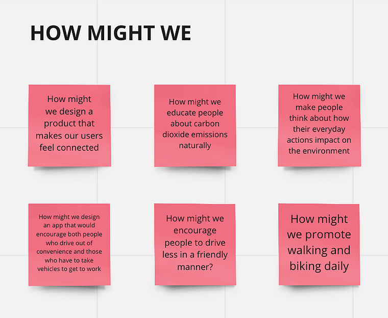
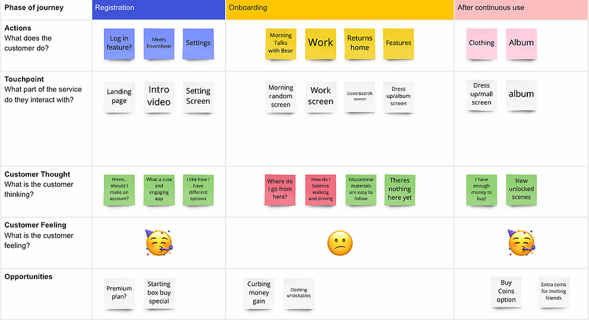
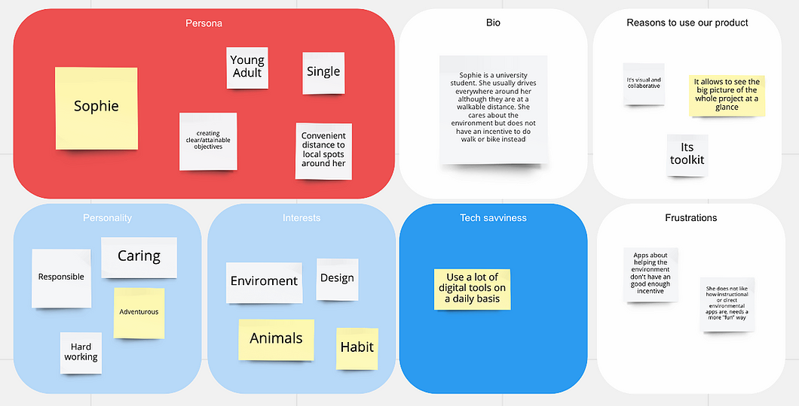

ENVIROBEAR |
Duration : 1 Day
|
|---|
INTRODUCTION |
EnviroBear is a one day individual design sprint based on an idea I originally thought of for a hackathon. The mobile application focuses on reducing co2 emissions caused by vehicles by setting a fun incentive for users to choose to walk or bike. The user interacts and bonds with EnviroBear, a polar bear who works as an iceberg home builder for polar bears families. Ice pieces used to build homes depends on the user's mode of transportation, where more eco-friendly methods (ex. walking, biking) will result in an increased number of ice pieces EnviroBear will find, compared to less environmentally friendly options. Transportation methods that harm the environment (ex. driving) can result in decreased "melted" ice pieces. If there are ice pieces collected by the end of the day, EnviroBear will create an iceberg home that will be shipped off to a polar bear family. The more homes created, the more coins and collectables EnviroBear will bring back to you. These coins can be used to buy clothing and accessories for your bear. |
|---|
PHYSICAL INACTIVITY36% of young adults in the U.S. do not engage in leisure physical activity. |

VEHICLE EMISSIONSCars make up 75% of all U.S. carbon monoxide emissions. |
|---|
THE PROCESS |
To start off, I created a HMW board to focus on different factors before thinking of a clear solution. At this point, I had a clear perspective on what I wished to create. I panned out all the parts of the user journey to show features and touchpoints of the application.I also created a user personal based on our target audience. This is Sophie, a young, educated adult who has a basic understanding about global warming. She cares about the enviroment and lives near her university, but needs an incentive to walk rather than drive to school.
|
|---|
FINAL |
This my first time attempting an individual design sprint, so I learnt a lot about the process and how to managing my time on my own.
In the future I hope to learn how to develop my design and bring it to life. Overall,
I was glad I was able to prioritize different methods of the process and successfully space out my time out well for each phase.
I can't wait to work on more sprints in the future. The final design below includes audio and a demonstration on how a new user would interact with the app.
|
|---|